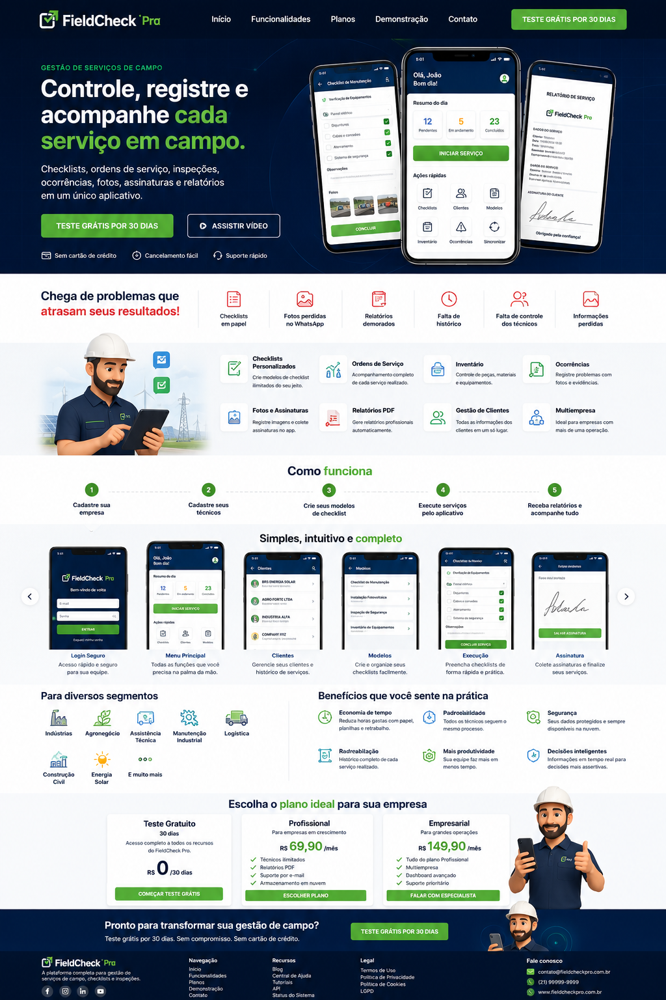

Menu principal
Operações, indicadores, atalhos e acesso rápido aos módulos.
O FieldCheck Pro ajuda empresas de campo a registrar checklists, anexar evidências, coletar assinatura do cliente e gerar relatórios automáticos em poucos segundos.

Telas reais do FieldCheck Pro para controlar clientes, modelos, serviços, relatórios, assinatura e acesso.
Operações, indicadores, atalhos e acesso rápido aos módulos.

Serviços de campo, inventário, relatórios, clientes, modelos e assinatura.

Crie checklists personalizados para cada tipo de serviço.

Controle de plano, trial de 30 dias e acesso por empresa.
O FieldCheck Pro atende equipes que executam visitas, instalações, manutenções, montagens, inspeções e validações com clientes.
Entrega técnica, inspeções e montagem industrial.
Instalação de box, esquadrias, fachadas e guarda-corpos.
Estruturas, máquinas, móveis, painéis, sistemas e equipamentos.
Revisões, checklists de entrega e comprovação de serviços.
Instalação, manutenção e laudo de ar-condicionado.
Instalação, vistoria, manutenção e relatórios fotográficos.
Vistorias, entrega de obra, etapas e não conformidades.
Qualquer equipe que precisa validar atendimento em campo.
Cadastre cliente, local e atividade.
Use modelos personalizados.
Comprove cada etapa executada.
Técnico e cliente assinam no app.
Relatório profissional automático.
Comprovação completa do serviço realizado.
Histórico seguro e acessível quando precisar.
Reduza papel, retrabalho e relatórios manuais.
Relatórios profissionais com fotos e assinaturas.
❌ Papel, fotos perdidas, assinatura manual, retrabalho, falta de histórico e dúvidas com clientes.
✅ Checklist, fotos, assinatura, PDF e histórico em uma plataforma profissional.
Quando seus vídeos estiverem prontos, eles entram aqui como prova visual do aplicativo funcionando.
Técnico preenchendo o atendimento.
Registro fotográfico dentro do serviço.
Cliente assina e recebe relatório.
Teste o FieldCheck Pro na sua operação antes de contratar.
Teste completo por 30 dias. Sem cartão de crédito.
Começar agoraFotos, assinaturas, PDF automático e controle de serviços.
Solicitar acessoDashboard gerencial, multiunidades, suporte prioritário e integrações.
Falar com especialistaNão. O uso principal acontece pelo celular, ideal para técnicos e equipes em campo.
Sim. A empresa pode criar modelos de checklist conforme o tipo de serviço ou equipamento.
Sim. O sistema organiza os dados, fotos e assinaturas para gerar um relatório profissional em PDF.
Sim. Vidraçarias, montadores em geral, oficinas, energia solar, climatização, construção civil e vários prestadores podem utilizar.
Teste grátis por 30 dias e veja como checklist, fotos, assinatura e PDF podem mudar sua operação.